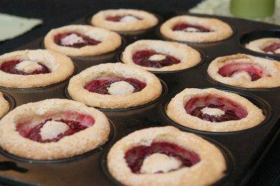

| Zutaten für 4 Personen: | |
| 4 grosse | Pflaumen |
| 2 | Eier |
| 1 Prise | Salz |
| 5 El | Zucker |
| 1 El | Amaretto |
| 50 g | geschälte Mandeln, fein gemahlen |
| 40 g | Mehl |
| 20 g | Butter |
| wenig | Puderzucker |
Vor- und Zubereitungszeit ca. 30 Minuten; Backen ca. 30 Minuten.
4 ofenfeste Förmchen von je ca. 2.5dl Inhalt fetten.
Die Butter schmelzen und auskühlen lassen.
Die Steine der Pflaumen mit dem Apfelausstecher ausstechen.
Die Pflaumen von oben bis zur Mitte im Abstand von ca. 3 mm schräg einschneiden.
Die Eier trennen.
Das Eiweiss mit einer Prise Salz steif schlagen.
2 Esslöffel Zucker zugeben und weiter schlagen bis der Eischnee glänzt. Nochmals 2 Esslöffel beigeben und kurz weiter schlagen.
Die Eigelbe mit einem Esslöffel Amaretto verklopfen und unter den Eischnee mischen.
Die geschälten Mandeln und das Mehl sorgfältig darunter mischen.
Die Butter darunter mischen.
75% der Masse in die Förmchen geben. Je eine Pflaume in die Mitte setzen.
1 Esslöffel Zucker in die Pflaumen streuen und mit der restlichen Masse bis zur Hälfte füllen.
Bei 180°C im vorgeheizten Ofen 30 Minuten in der unteren Hälfte backen.
Herausnehmen, abkühlen und mit wenig Puderzucker bestäuben. Lauwarm servieren.
Betty Bossi, Desserts für alle, Seite 26
Ganz schmackhafte Dessertküchlein. RE Juli 2011
@LINKBACK_TAG@ @WAKELOCK@